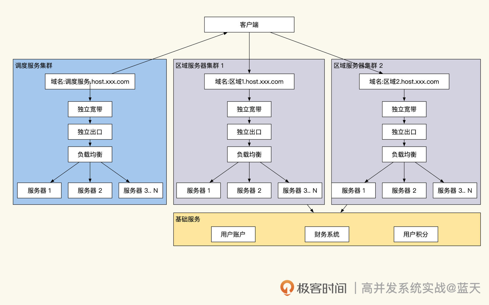
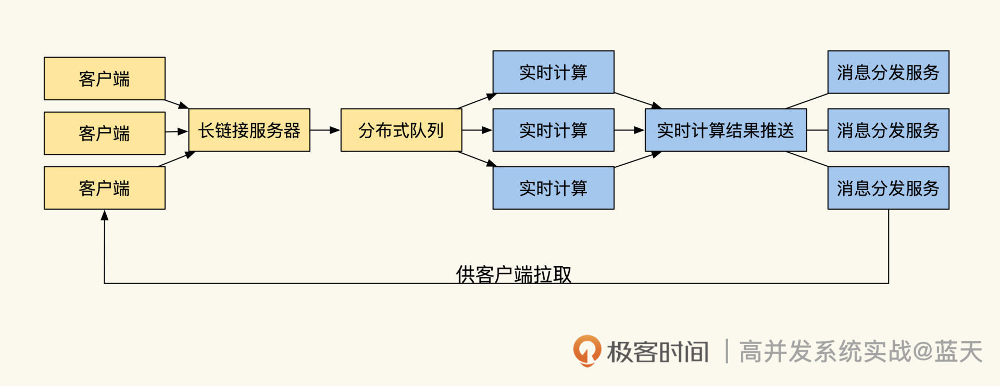
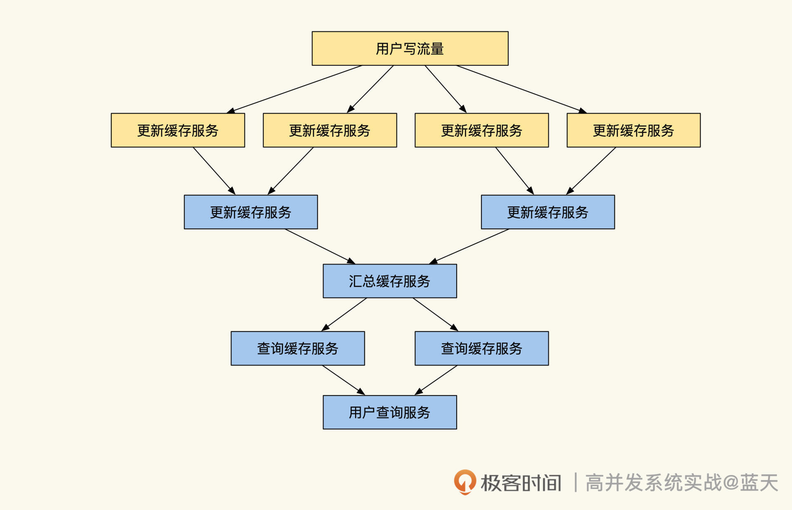
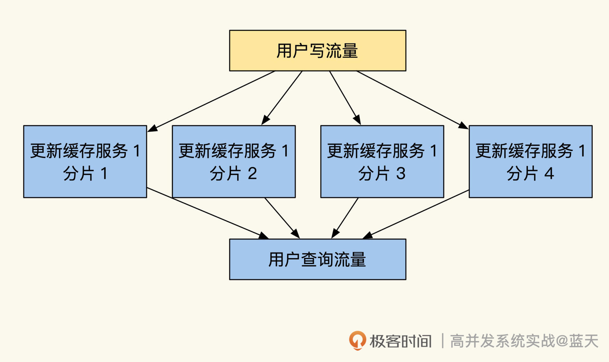

- 00 开篇词 高并发系统，技术实力的试金石.md.html
- 01 结构梳理：大并发下，你的数据库表可能成为性能隐患.md.html
- 02 缓存一致：读多写少时，如何解决数据更新缓存不同步？.md.html
- 03 Token：如何降低用户身份鉴权的流量压力？.md.html
- 04 同城双活：如何实现机房之间的数据同步？.md.html
- 05 共识Raft：如何保证多机房数据的一致性？.md.html
- 06 领域拆分：如何合理地拆分系统？.md.html
- 07 强一致锁：如何解决高并发下的库存争抢问题？.md.html
- 08 系统隔离：如何应对高并发流量冲击？.md.html
- 09 分布式事务：多服务的2PC、TCC都是怎么实现的？.md.html
- 10 稀疏索引：为什么高并发写不推荐关系数据库？.md.html
- 11 链路追踪：如何定制一个分布式链路跟踪系统 ？.md.html
- 12 引擎分片：Elasticsearch如何实现大数据检索？.md.html
- 13 实时统计：链路跟踪实时计算中的实用算法.md.html
- 14 跳数索引：后起新秀ClickHouse.md.html
- 15 实践方案：如何用C++自实现链路跟踪？.md.html
- 16 本地缓存：用本地缓存做服务会遇到哪些坑？.md.html
- 17 业务脚本：为什么说可编程订阅式缓存服务更有用？.md.html
- 18 流量拆分：如何通过架构设计缓解流量压力？.md.html
- 19 流量调度：DNS、全站加速及机房负载均衡.md.html
- 20 数据引擎：统一缓存数据平台.md.html
- 21 业务缓存：元数据服务如何实现？.md.html
- 22 存储成本：如何推算日志中心的实现成本？.md.html
- 23 网关编程：如何通过用户网关和缓存降低研发成本？.md.html
- 24 性能压测：压测不完善，效果减一半.md.html
- 答疑课堂 思考题答案（一）.md.html
- 结束语 为者常成，行者常至.md.html
- 捐赠
18 流量拆分：如何通过架构设计缓解流量压力？
你好，我是徐长龙。
今天，我会以直播互动为例，带你看看读多写多的情况下如何应对流量压力。- 一般来说，这种服务多数属于实时互动服务，因为时效性要求很高，导致很多场景下，我们无法用读缓存的方式来降低核心数据的压力。所以，为了降低这类互动服务器的压力，我们可以从架构入手，做一些灵活拆分的设计改造。
事实上这些设计是混合实现对外提供服务的，为了让你更好地理解，我会针对直播互动里的特定的场景进行讲解。一般来说，直播场景可以分为可预估用户量和不可预估用户量的场景，两者的设计有很大的不同，我们分别来看看。
可预估用户量的服务：游戏创建房间
相信很多玩对战游戏的伙伴都有类似经历，就是联网玩游戏要先创建房间。这种设计主要是通过设置一台服务器可以开启的房间数量上限，来限制一台服务器能同时服务多少用户。
我们从服务器端的资源分配角度分析一下，创建房间这个设计是如何做资源调配的。创建房间后，用户通过房间号就可以邀请其他伙伴加入游戏进行对战，房主和加入的伙伴，都会通过房间的标识由调度服务统一分配到同一服务集群上进行互动。
这里我提示一下，开房间这个动作不一定需要游戏用户主动完成，可以设置成用户开启游戏就自动分配房间，这样做不但能提前预估用户量，还能很好地规划和掌控我们的服务资源。
如何评估一个服务器支持多少人同时在线呢？
我们可以通过压测测出单台服务器的服务在线人数，以此精确地预估带宽和服务器资源，算出一个集群（集群里包括若干服务器）需要多少资源、可以承担多少人在线进行互动，再通过调度服务分配资源，将新来的房主分配到空闲的服务集群。
最后的实现效果如下所示：

如上图所示，在创建房间阶段，我们的客户端在进入区域服务器集群之前，都是通过请求调度服务来进行调度的。调度服务器会定期接收各组服务器的服务用户在线情况，以此来评估需要调配多少用户进入到不同区域集群；同时客户端收到调度后，会拿着调度服务给的token去不同区域申请创建房间。
房间创建后，调度服务会在本地集群内维护这个房间的列表和信息，提供给其他要加入游戏的玩家展示。而加入的玩家同样会接入对应房间的区域服务器，与房主及同房间玩家进行实时互动。
这种通过配额房间个数来做服务器资源调度的设计，不光是对战游戏里，很多场景都用了类似设计，比如在线小课堂这类教学互动的。我们可以预见，通过这个设计能够对资源做到精准把控，用户不会超过我们服务器的设计容量。
不可预估用户量的服务
但是，有很多场景是随机的，我们无法把控有多少用户会进入这个服务器进行互动。
全国直播就无法确认会有多少用户访问，为此，很多直播服务首先按主播过往预测用户量。通过预估量，提前将他们的直播安排到相对空闲的服务器群组里，同时提前准备一些调度工具，比如通过控制曝光度来延缓用户进入直播，通过这些为服务器调度争取更多时间来动态扩容。
由于这一类的服务无法预估会有多少用户，所以之前的服务器小组模式并不适用于这种方式，需要更高一个级别的调度。
我们分析一下场景，对于直播来说，用户常见的交互形式包括聊天、答题、点赞、打赏和购物，考虑到这些形式的特点不同，我们针对不同的关键点依次做分析。
聊天：信息合并
聊天的内容普遍比较短，为了提高吞吐能力，通常会把用户的聊天内容放入分布式队列做传输，这样能延缓写入压力。
另外，在点赞或大量用户输入同样内容的刷屏情境下，我们可以通过大数据实时计算分析用户的输入，并压缩整理大量重复的内容，过滤掉一些无用信息。

压缩整理后的聊天内容会被分发到多个聊天内容分发服务器上，直播间内用户的聊天长连接会收到消息更新的推送通知，接着客户端会到指定的内容分发服务器群组里批量拉取数据，拿到数据后会根据时间顺序来回放。请注意，这个方式只适合用在疯狂刷屏的情况，如果用户量很少可以通过长链接进行实时互动。
答题：瞬时信息拉取高峰
除了交互流量极大的聊天互动信息之外，还有一些特殊的互动，如做题互动。直播间老师发送一个题目，题目消息会广播给所有用户，客户端收到消息后会从服务端拉取题目的数据。
如果有10w用户在线，很有可能导致瞬间有10w人在线同时请求服务端拉取题目。这样的数据请求量，需要我们投入大量的服务器和带宽才能承受，不过这么做这个性价比并不高。
理论上我们可以将数据静态化，并通过CDN阻挡这个流量，但是为了避免出现瞬时的高峰，推荐客户端拉取时加入随机延迟几秒，再发送请求，这样可以大大延缓服务器压力，获得更好的用户体验。
切记对于客户端来说，这种服务如果失败了，就不要频繁地请求重试，不然会将服务端打沉。如果必须这样做，那么建议你对重试的时间做退火算法，以此保证服务端不会因为一时故障收到大量的请求，导致服务器崩溃。
如果是教学场景的直播，有两个缓解服务器压力的技巧。第一个技巧是在上课当天，把抢答题目提前交给客户端做预加载下载，这样可以减少实时拉取的压力。
第二个方式是题目抢答的情况，老师发布题目的时候，提前设定发送动作生效后5秒再弹出题目，这样能让所有直播用户的接收端“准时”地收到题目信息，而不至于出现用户题目接收时间不一致的情况。
至于非抢答类型的题目，用户回答完题目后，我们可以先在客户端本地先做预判卷，把正确答案和解析展示给用户，然后在直播期间异步缓慢地提交用户答题结果到服务端，以此保证服务器不会因用户瞬时的流量被冲垮。
点赞：客户端互动合并
对于点赞的场景，我会分成客户端和服务端两个角度带你了解。
先看客户端，很多时候，客户端无需实时提交用户的所有交互，因为有很多机械的重复动作对实时性要求没那么高。
举个例子，用户在本地狂点了100下赞，客户端就可以合并这些操作为一条消息（例如用户3秒内点赞10次）。相信聪明如你，可以把互动动作合并这一招用在更多情景，比如用户连续打赏100个礼物。
通过这个方式可以大幅度降低服务器压力，既可以保证直播间的火爆依旧，还节省了大量的流量资源，何乐而不为。
点赞：服务端树形多层汇总架构
我们回头再看看点赞的场景下，如何设计服务端才能缓解请求压力。
如果我们的集群QPS超过十万，服务端数据层已经无法承受这样的压力时，如何应对高并发写、高并发读呢？微博做过一个类似的案例，用途是缓解用户的点赞请求流量，这种方式适合一致性要求不高的计数器，如下图所示：

这个方式可以将用户点赞流量随机压到不同的写缓存服务上，通过第一层写缓存本地的实时汇总来缓解大量用户的请求，将更新数据周期性地汇总后，提交到二级写缓存。
之后，二级汇总所在分片的所有上层服务数值后，最终汇总同步给核心缓存服务。接着，通过核心缓存把最终结果汇总累加起来。最后通过主从复制到多个子查询节点服务，供用户查询汇总结果。
另外，说个题外话，微博是Redis重度用户，后来因为点赞数据量太大，在Redis中缓存点赞数内存浪费严重（可以回顾上一节课 jmalloc兄弟算法的内容），改为自行实现点赞服务来节省内存。
打赏&购物：服务端分片及分片实时扩容
前面的互动只要保证最终一致性就可以，但打赏和购物的场景下，库存和金额需要提供事务一致性的服务。
因为事务一致性的要求，这种服务我们不能做成多层缓冲方式提供服务，而且这种服务的数据特征是读多写多，所以我们可以通过数据分片方式实现这一类服务，如下图：

看了图是不是很好理解？我们可以按用户id做了 hash拆分，通过网关将不同用户uid取模后，根据范围分配到不同分片服务上，然后分片内的服务对类似的请求进行内存实时计算更新。
通过这个方式，可以快速方便地实现负载切分，但缺点是hash分配容易出现个别热点，当我们流量扛不住的时候需要扩容。
但是hash这个方式如果出现个别服务器故障的话，会导致hash映射错误，从而请求到错误的分片。类似的解决方案有很多，如一致性hash算法，这种算法可以对局部的区域扩容，不会影响整个集群的分片，但是这个方法很多时候因为算法不通用，无法人为控制，使用起来很麻烦，需要开发配套工具。
除此之外，我给你推荐另外一个方式——树形热迁移切片法，这是一种类似虚拟桶的方式。
比如我们将全量数据拆分成256份，一份代表一个桶，16个服务器每个分16个桶，当我们个别服务器压力过大的时候，可以给这个服务器增加两个订阅服务器去做主从同步，迁移这个服务器的16个桶的数据。
待同步迁移成功后，将这个服务器的请求流量拆分转发到两个8桶服务器，分别请求这两个订阅服务器继续对外服务，原服务器摘除回收即可。
服务切换成功后，由于是全量迁移，这两个服务同时同步了不属于自己的8个桶数据，这时新服务器遍历自己存储的数据，删除掉不属于自己的数据即可。当然也可以在同步16桶服务的数据时，过滤掉这些数据，这个方法适用于Redis、MySQL等所有有状态分片数据服务。
这个服务的难点在于请求的客户端不直接请求分片，而是通过代理服务去请求数据服务，只有通过代理服务才能够动态更新调度流量，实现平滑无损地转发流量。
最后，如何让客户端知道请求哪个分片才能找到数据呢？我给你分享两个常见的方式：
第一种方式是，客户端通过算法找到分片，比如：用户 hash(uid) % 100 = 桶id，在配置中通过桶id找到对应分片。
第二种方式是，数据服务端收到请求后，将请求转发到有数据的分片。比如客户端请求A分片，再根据数据算法对应的分片配置找到数据在B分片，这时A分片会转发这个请求到B，待B处理后返回给客户端数据（A返回或B返回，取决于客户端跳转还是服务端转发）。
服务降级：分布式队列汇总缓冲
即使通过这么多技术来优化架构，我们的服务仍旧无法完全承受过高的瞬发流量。
对于这种情况，我们可以做一些服务降级的操作，通过队列将修改合并或做网关限流。虽然这会牺牲一些实时性，但是实际上，很多数字可能没有我们想象中那么重要。像微博的点赞统计数据，如果客户端点赞无法请求到服务器，那么这些数据会在客户端暂存一段时间，在用户看数据时看到的只是短期历史数字，不是实时数字。
十万零五的点赞数跟十万零三千的点赞数，差异并不大，等之后服务器有空闲了，结果追上来最终是一致的。但作为降级方案，这么做能节省大量的服务器资源，也算是个好方法。
总结
这节课我们学习了如何通过架构以及设计去缓解流量冲击。场景不同，拆分的技巧各有不同。
我们依次了解了如何用房间方式管理用户资源调配、如何对广播大量刷屏互动进行分流缓冲、如何规避答题的瞬时拉题高峰、如何通过客户端合并多次点赞动作、如何通过多个服务树形结构合并点赞流量压力，以及如何对强一致实现分片、调度等。
因为不同场景对一致性要求不同，所以延伸出来的设计也是各有不同的。
为了实现可动态调配的高并发的直播系统，我们还需要良好的基础建设，具体包括以下方面的支撑：
- 分布式服务：分布式队列、分布式实时计算、分布式存储。
- 动态容器：服务器统一调度系统、自动化运维、周期压力测试、Kubernetes动态扩容服务。
- 调度服务：通过HttpDNS临时调度用户流量等服务，来实现动态的资源调配。
思考题
既然CDN能够缓存我们的静态数据，那么它是如何识别到我们本地的静态数据有更新的呢？
欢迎你在评论区与我交流讨论，我们下节课见！
© 2019 - 2023 Liangliang Lee. Powered by gin and hexo-theme-book.